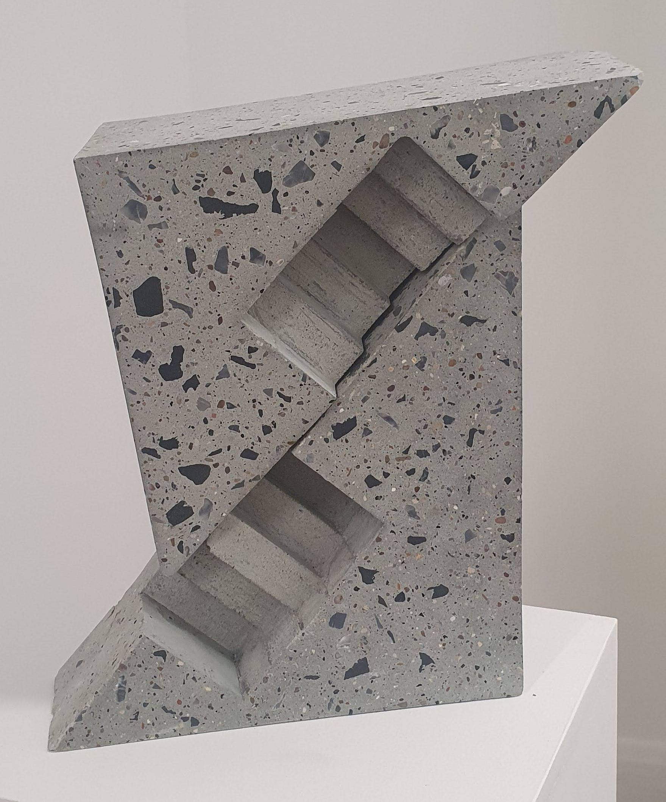

© Riky Choudhuri 2026
All rights reserved

At some point after the coercion together of these two triangles they began sliding apart tectonically. The differing frontal chambers declare the twins dizygotic though they share the neutral colouring of cygnets. They are carved with insurmountable flights of stairs that call out from the rockface yet offer transit to nowhere.
The curator notes the inexorable density of the pieces and their Brutalist conception. I would add a strong military resemblance paying homage to the fortifications of the Atlantic Coast. The triangle points have the forthrightness of beaks and bayonets. Two smaller chambers at the rear could house gunners waiting for seaborne invasion.
This formal thrust is mitigated by the aggregate irregularly bejewelling the surface. They contrast with the strong lines, exploding into constellations and galaxies. Suspended like fossilised organisms they are immobilised for eternity within the substrate. In memoriam. But like a freckled face there is the flickering of persona.
There is a fantasy element to the geometry; that of a temple artefact of unknown origin worthy of veneration. The surface has been polished smooth which the artist encouraged me to touch. These are hardy works, emotionally bounded and unafraid of interaction, ready for life outside of the White Cube.
Seen on Saturday 23 May 2026 at Twilight Contemporary in London as part of a solo exhibition by William Braithwaite curated by Sam Hanson. Continues until 06 June 2026.